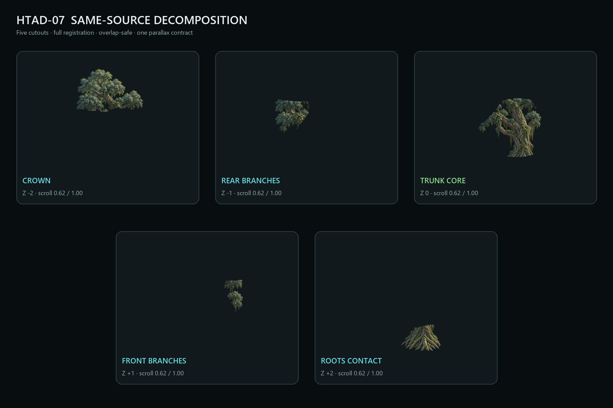
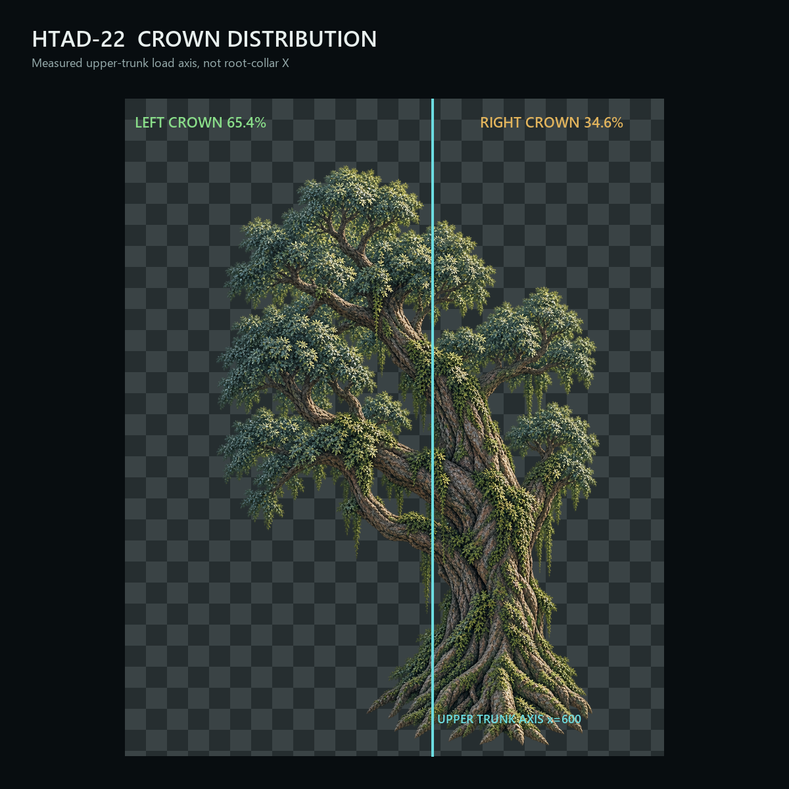

Мобильный review-лист
Основной лист: silhouette, placement, center frame, decomposition и вердикт.

Движение камеры и parallax
Master Hero Tree

До / после

Центральная камера

Правый предел камеры

Нарезка из одного Master


Распределение кроны

